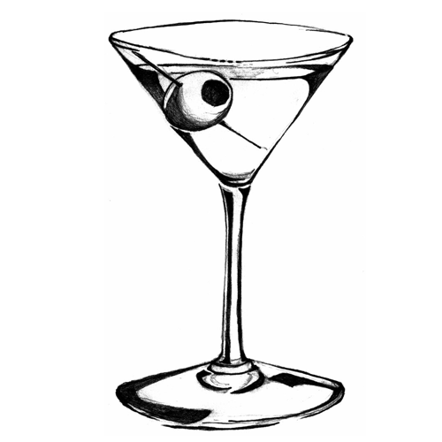

The
Glass
The most important aspect of a martini glass is that it is cold prior to pouring in the ingredients. After that, there are a number of variations that we will discuss below.

The most important aspect of a martini glass is that it is cold prior to pouring in the ingredients. After that, there are a number of variations that we will discuss below.
This the most iconic, most historic, and in our opinion the worst glass ever designed. It has a very high center of gravity, making it so easy to spill we calculated the total net loss of martinis due to this glass's spillage as equal to the GDP of Belarus - it's time for a better glass.
This one fits in the dishwasher easily, and is much, much harder to spill. However, the point of a stem is to keep your warm hands from heating up the drink. We need a least some stem.
The coupe has become very popular in trendy bars nowadays, its different and a softer feel to it than the traditional but they are fairly diminutive and always seem so tiny, we'll leave this one to the cosoms and appletinis
Considering how popular this glass is made us have to review but you will never see it in a respectable bar, its for fun parties at home or drinking in front of a fun house mirror.
While this one isn't often used for martinis given how many drinks are served in Nic and Nora glasses nowadays there are some intrepid bartenders who are employing it for the martini. It has a nice look and feel but just seems too different for a martini.
The tour glass has the stem to keep the martini cold, the traditional v-shape of a martini glass, but has edges that come up from the rim to help with spillage and balance. The best of everything this is our winner.